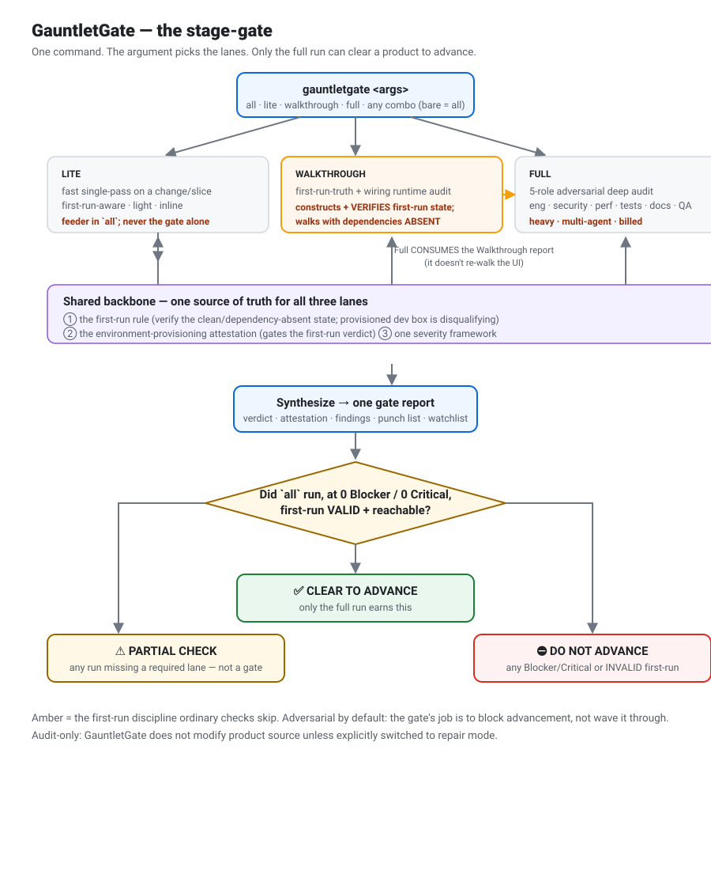

GauntletGate is one gate with three lanes. Run it at the end of a stage, sprint, or release — the product doesn't advance until it passes. It reads your repo as truth, drives your app with Playwright, and won't clear a product that's broken for a brand-new user.
gauntletgate <args> — pick any subset. Bare gauntletgate = all.
| arg | lane | what it does | weight |
|---|---|---|---|
lite | Lite | fast single-pass on a change/slice (first-run-aware) | light, inline |
walkthrough | Walkthrough | first-run-truth + interface-wiring runtime audit | light–medium |
full | Full | 5-role adversarial deep audit (eng / security / perf / tests / docs / QA) | heavy, billed |
all | all three | Lite → Walkthrough → Full → one gate verdict | heavy |
The lanes compose: Full consumes the Walkthrough report instead of re-walking the UI, so they compound rather than overlap.
Only when all ran — Walkthrough and Full — at 0 Blocker / 0 Critical, first-run valid and reachable by a new user.
Any run missing a required lane. Reports findings, but is explicitly not an advancement gate. A cheap run can't masquerade as the full gate.
Any Blocker/Critical, or invalid first-run coverage on a product with a first-run surface — plus the punch list to clear before a re-run.

The most expensive defect is the one a developer never sees, because the dev box is already set up. GauntletGate was built after a real miss: a product reported "near-clean (1 Minor)" while a brand-new user with no model server hit an immediate dead-end — the check ran on a provisioned dev box whose "clean profile" isolation had silently failed.
So every lane that touches a first-run / onboarding / dependency / empty-data surface must construct and verify the real first-run state, walk the product with dependencies absent, treat a provisioned dev box as disqualifying, and file a first-run dead-end on the core feature as a Blocker. One shared standard, obeyed by all three lanes.
python install.py # auto-detect Codex or CoWork/Claude python install.py --app codex # -> ~/.codex/skills/gauntletgate/ python install.py --app cowork # -> ~/.claude/skills/gauntletgate/ python install.py --project PATH # project-local install using the selected format
full/all fan out 5 subagents (billed).